Özel Ölçü Mutfak Dolabı İmalatı
Korkut Mobilya olarak Yenibosna, Bahçelievler, Bakırköy, Bağcılar, Avcılar ve çevresinde özel ölçü mutfak dolabı üretimi yapıyoruz.
Lake, MDFLAM, akrilik ve membran kapak seçenekleri ile özel tasarım mutfaklar üretiyoruz.
Yerinde ölçü alıyor, projelendiriyor ve üretimini gerçekleştiriyoruz.
Aşağıda özel ölçü olarak ürettiğimiz mutfak dolabı modellerinden örnekler bulunmaktadır.
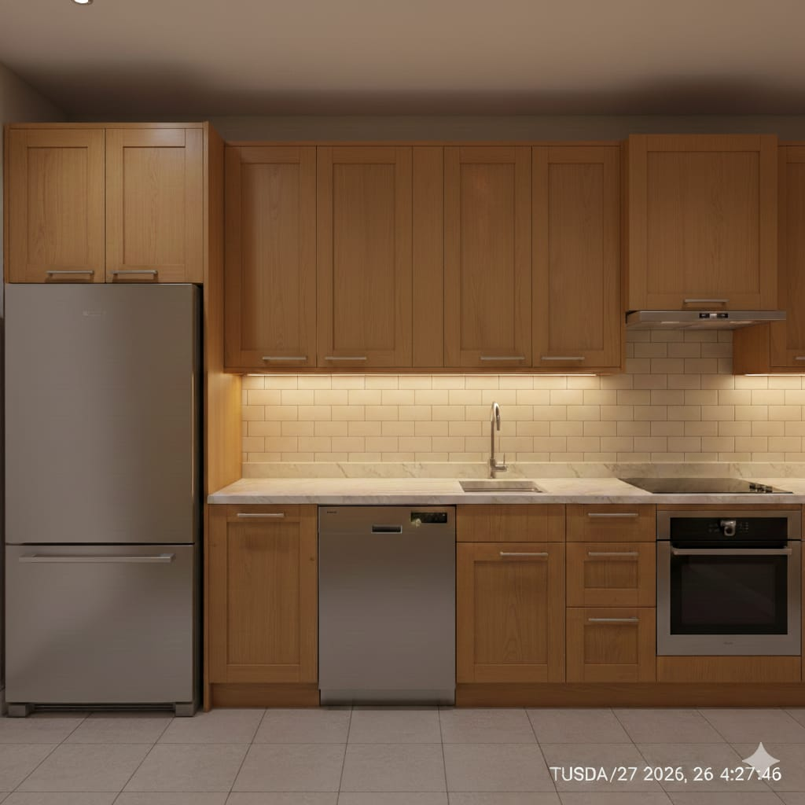
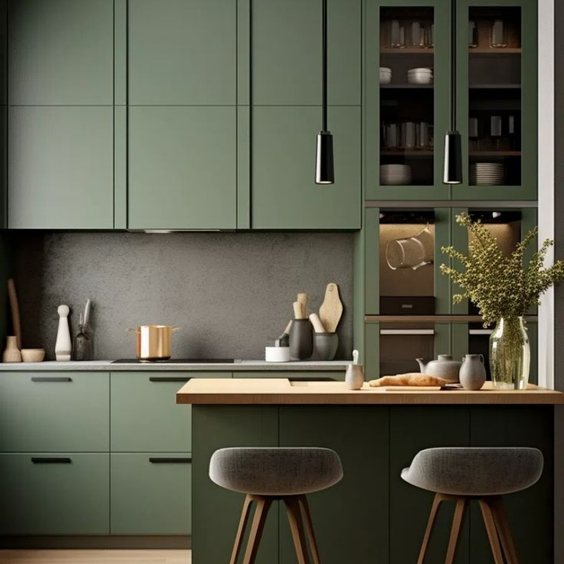
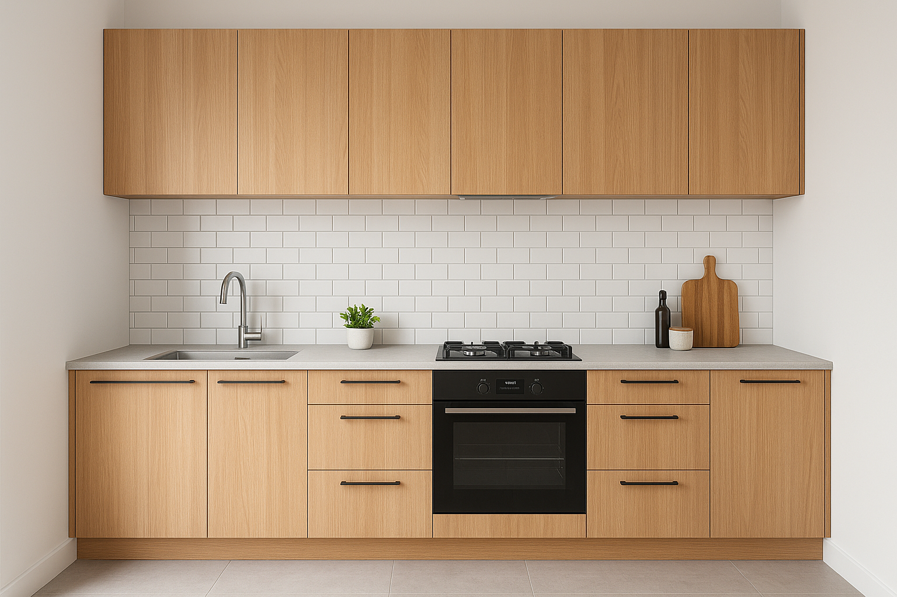
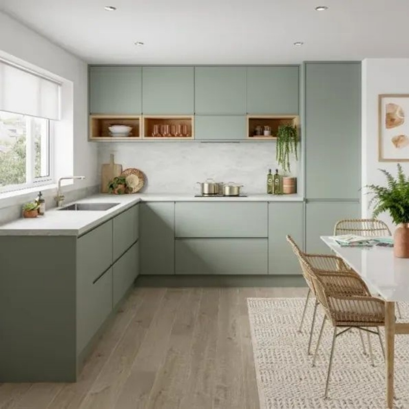
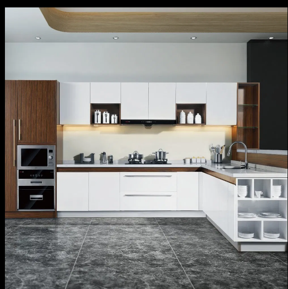
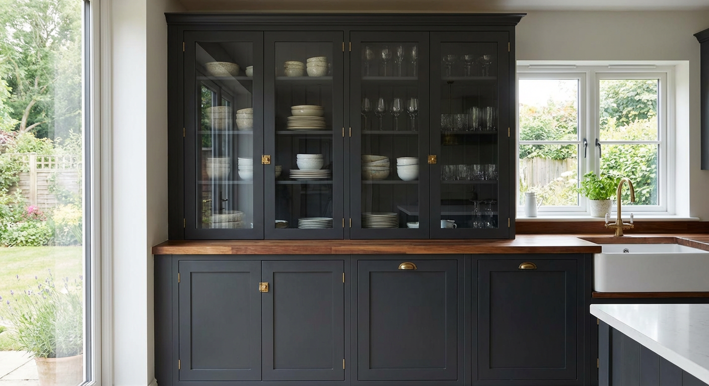
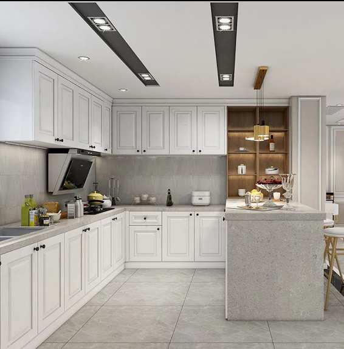
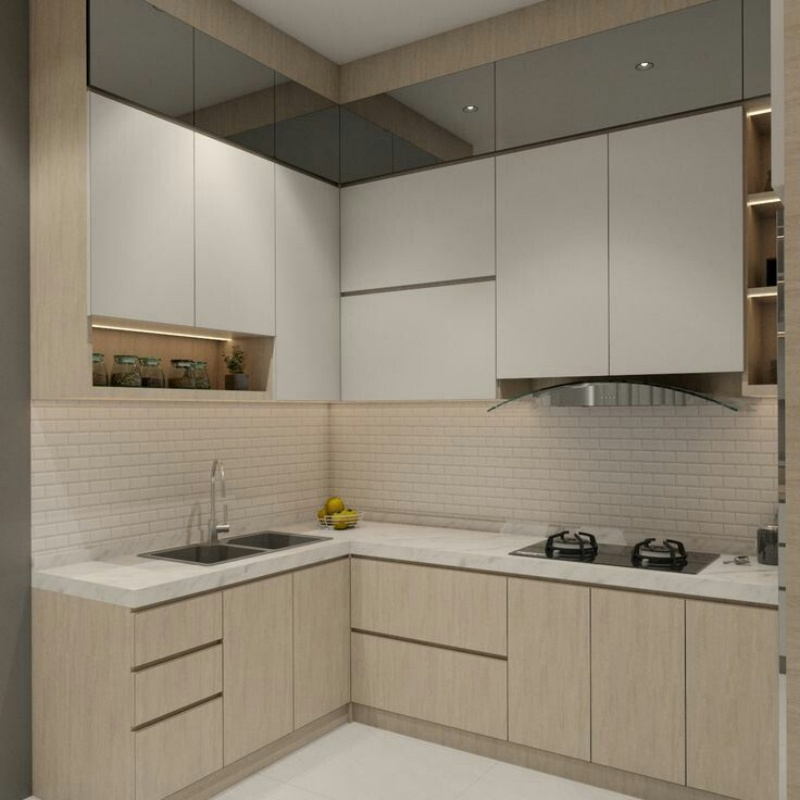
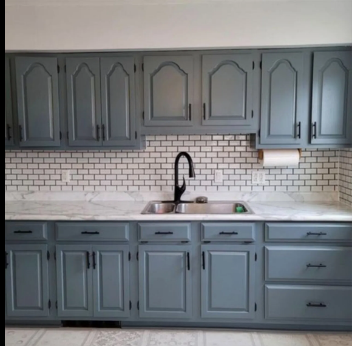
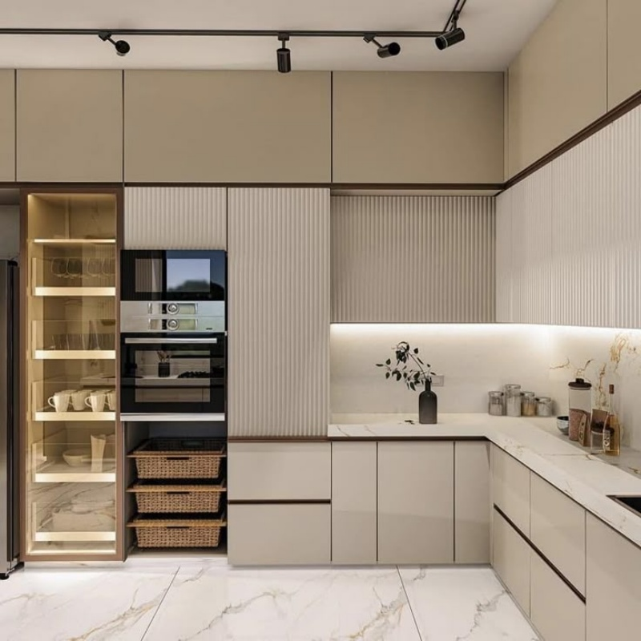
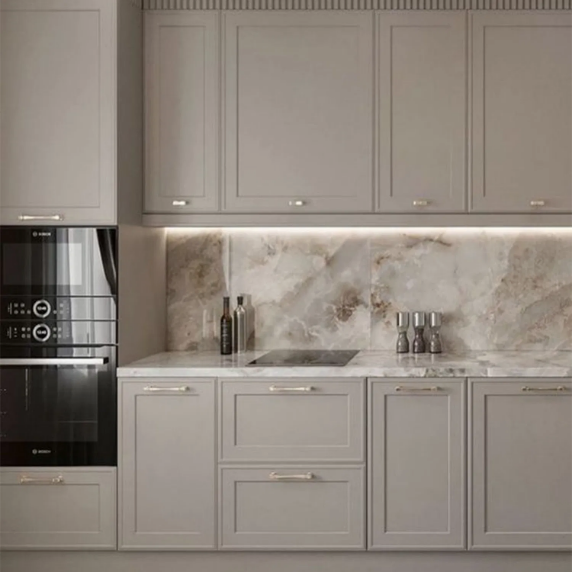